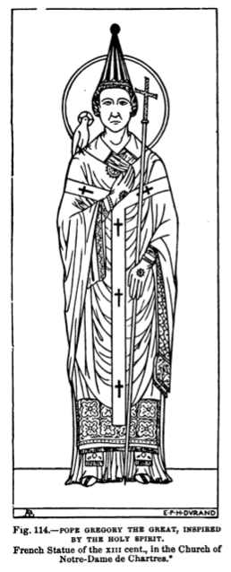
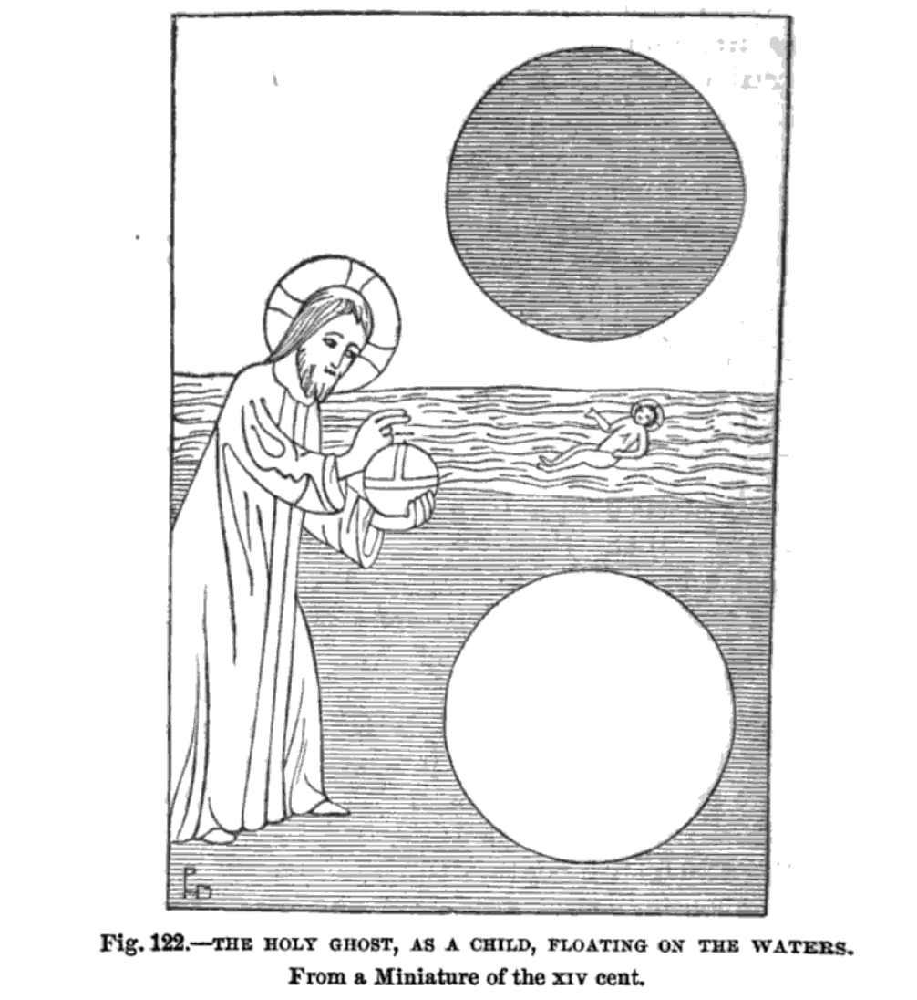
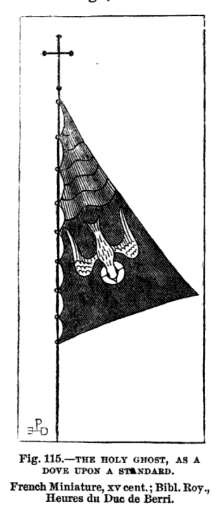
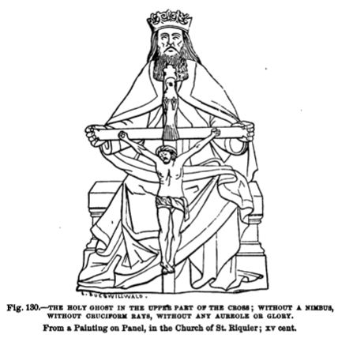
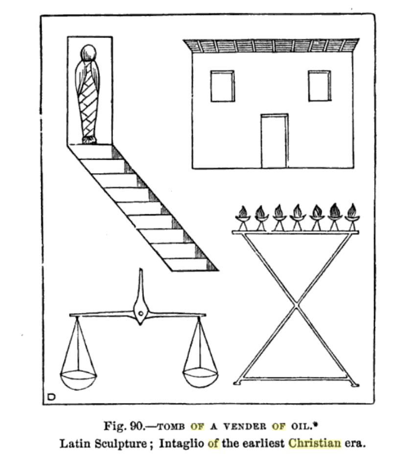
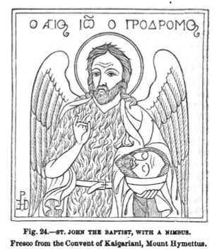
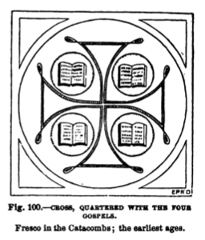

Saint Denis of Paris
Born and raised in Italy in the 3rd century AD, Denis was sent as a missionary to Gaul by Pope St. Clement. Denis made the base of his missionary activity in what is today Paris and for this reason is now known as the first bishop of Paris and the Apostle of France. Denis and his priestly companions were arrested and imprisoned for their missionary work. Denis was beheaded and it is said that afterwards he picked his mitred head up and walked for several miles, preaching a sermon along the way. The site where Denis stopped preaching and died was marked by a shrine that eventually developed into the Basilica of Saint-Denis, which became the burial place for the monarchs of France.

Crane of Classical Heraldry
As a symbol of heraldry the sole crane holding a stone was used to symbolize vigilance. Legend said that cranes lived along the banks of the Nile river and were preyed upon by Pygmees. To protect themselves at night, flocks of crane would charge one bird to watch duty, and that trusted bird would hold a stone in its claws so if the bird were to neglect their duties and fall asleep, it would drop the stone, thus awakening the other birds.

Saint Gregory the Great
Pope Gregory I, also known as Saint Gregory the Great, was the bishop of Rome in the 6th century. Gregory the Great iniated the first recorded large-scale mission from Rome. Throughout the Middle Ages he was known as "the Father of Christian Worship". Note the dove on Gregory's right shoulder which also bears a nimbus as befitting the Holy Spirit.

Saint Gregory IV
Gregory IV was a native of Rome and the cardinal priest of St. Mark's when he was elected pope in the 9th century. In addition to his involvment in the Carolingian quarrels, he was canonized for his committment to the architectural development of the church in Rome, helping to rebuild St. Mark's Basilica and the atrium of St. Peter's Basilica. Attributing his role in rebuilding Rome, he is often presented holding church buildings in his hands.


The Holy Ghost
The Holy Trinity consists of the Holy Father, the Holy Son, and the Holy Spirit. As one third of the Trinity, the Holy Spirit is represented in various ways throughout history. Here on the left we see an image of the Holy Spirit as child floating at sea and on the right an image of the Holy Spirit as a dove emblazoned on a standard.

The Holy Spirit is here depicted on the right as a wizened old man who holds a crucifix in his hands. Note the dove resting above Christ's fallen head.


Jesus Christ
The emblems of the Passion in which Christ is depicted on the crucifix with imagery and ornate border decoration. Note, amongst other imagery, the crown of thorns to Christ's right hand side, the pillar where Christ was whipped, the whips used for the 39 lashes, the chains which bound Christ overnight in prison, the lance with which a solider pierced Christ's side, and the dice with which the soliders cast lots for Christ's seamless robe. On the right Christ is depicted with a cruciform nimbus with the letters included therein reading "I Am".

Christ ascending into heaven accompanied by four cherubim. Christ is encircled in an aureole with a sun and moon banner displayed above him.

John the Evangelist
John the Evangelist is the name traditionally given to the supposed author of the Gospel of John. The text of the Gospel of John refers to an otherwise unnamed "disciple whom Jesus loved", who "bore witness to and wrote" the Gospel's message. Here John the Evangelist is depicted with a nimbus circling his head and two sunflowers crossed above. The sunflowers are emblematic of the sun's power and life-giving force.

Tomb of a Vendor of Oil
The tomb of a vendor of oil with various images depicting an embalmed body descending into the tomb, a small house, a candlestick structure fitted with oil-buring funeral lamps, and a scale.


John the Baptist
John the Baptist is venerated for his role in preceding the Gospels as he baptized Jesus Christ and foretold of his coming. On the left above John's depiction is Greek lettering reading "St. John the Precursor". Here John's head is honored with a nimbus and he is holding his own head, as John was beheaded for his heresy. John is clad in camel's skin with angel's wings attached to his back.
On the right, John is depicted with a nimbus and cradling the Lamb of God in his hands.

The Lamb of God
Christ is often depicted as a lamb as inspired by scripture. Here the Lambo of God is depicted with a cruciform nimbus and carrying a cross-bearing scepter.

The Cross
Iconic and instantly recognizable the world over, the cross has seen countless depictions and representations. Here we see a balanced and equilateral cross featuring the four gospels in each quarter of the illustration.